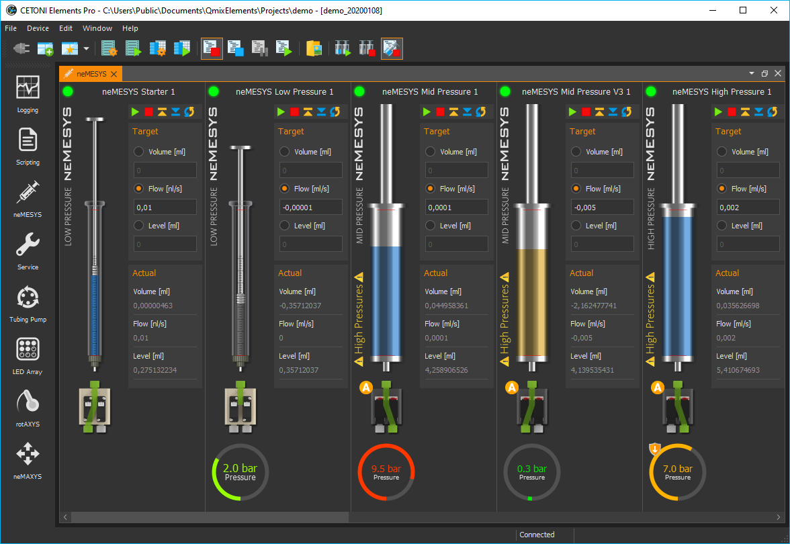
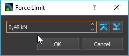

Nemesys Plugin
Introduction
The Nemesys Plugin is for controlling the CETONI Nemesys syringe pumps. In the Nemesys View (figure below), operating panels are displayed for all existing and configured syringe pumps.

If the Nemesys View is not visible, then select from the main menu or click the Nemesys button in the sidebar.
Pump Operating Panel
Overview
Each operating panel is used to control, configure and visualize a Nemesys dosing module. It contains all the control elements for configuring and controlling the pump parameters and for visualizing the current status.

The panel consists of
Caption of the syringe pump
Level indicator
Control elements (depending on operating mode)
Valve switching and status
Display of the internal force sensor if supported by the device
The force sensor display is hidden by default. To show the display, select from the context menu.

Changing module names
You can assign a unique name to each dosing unit. For example, you can indicate which liquid a dosing unit doses or what it is used for. To assign a new name, simply make a left mouse click on the name of the dosing unit. You can then enter a new name, and confirm the entry with Return (Figure below).

Syringe level indicator
The fill level indicator of the syringe always shows the current position of the drive unit, and thus the current fill level of the syringe used. The colour of the syringe also indicates the current motion of the dosing unit, so you can immediately see the direction of motion of the syringe even with a very low flow rate. The following colours are possible:
|
Grey - The drive unit is currently inactive. |
|
Blue - The syringe piston is moving in the direction of the syringe clamp (Dispensing). |
|
Orange - The syringe piston is moving away from the syringe clamp (Aspirating). |


This color coding of the direction of motion is also used in all other parts of the Nemesys plugin.
Tip
The colours of the syringes help you identify the direction of motion quickly, especially with very low flow rates, because it is almost impossible to see the position of the syringe piston changing.
The thickness of the syringe in the display indicates the approximate size of the currently clamped syringe. You should be very cautious with the use of higher flow rates, especially with very large syringes, because very high pressures can develop very quickly, which could damage the device (valve) or your application.
Attention
Risk of high pressures damaging the connectors in the liquid path. To avoid high pressures causing damage, never make a reference move with a high-pressure syringe clamped.
Software limits
The travel path of a syringe is limited in the software by a minimum and a maximum value in order to prevent irreparable damage to the syringe or the piston being pulled out of the body of the syringe. These values are indicated by two red marks in the fill level indicator (Figure below), and they have to be defined for each syringe in the Syringe configuration.
Force Monitoring
Introduction to Force Monitoring
The latest pumps in the Nemesys range (Nemesys M and Nemesys S) have an internal force sensor to monitor the force with which the syringe plunger is pressed into the syringe. This serves to minimize the risk of damage to the device, the syringes and the application.
Each pump has a fixed maximum force value at which dosing stops:
Nemesys S |
0.48 kN |
Nemesys M |
1.3 kN |
In addition, the maximum force can be further limited by a user adjustable force limit.
Operating Controls
In the operating panel of the pump you will find the display of the force monitoring ❶ below the syringe display: If the display is hidden, you can show the display again via the context menu of the pump. In the context menu, select the menu item :
The protective shield symbol ❷ (see figure below) in the upper left corner of the force display indicates whether the force monitoring is active or inactive (symbol greyed out).

Dosage is only possible when force monitoring is activated. If you move the mouse arrow over the force indicator, additional information is displayed in a small window ❸:
Name of the force sensor channel (e.g. to query the sensor in the script or to use it in the logger).
Force range - the adjustable range of force monitoring
Force limit - the currently set maximum permissible force
Monitoring - indicates whether the force monitoring is active.
To limit the maximum force, right-click in the force display and select the menu item :

Then enter the desired maximum force and click OK:
What to do after a force overload stop
If the maximum set force is exceeded while the pump is in use, the pump is stopped immediately and set to a fault state. This is shown in the figure below. The value of the force sensor (green curve) has exceeded the set force limit (red line) ❶.
The error status of the pump is indicated by the red flashing LED ❷. The current measured value of the force sensor can be seen in the force display ❸. In addition, the reason for the error is shown in the event log.

To reset the pump from this “overload” state to normal operating mode, proceed as follows:
Disable force monitoring. Click with the right mouse button in the force display and select the menu item Enable / Disable Force Monitoring. The protective shield symbol should then be greyed out.
The event log informs you that the safety stop has now been reset and that only aspiration is possible:

Enable pump. To activate the pump, right-click on the red status LED of the pump and select the menu item Enable Pump Drive from the context menu. The status LED of the pump must then light up green.

Reduce force. You can now reduce the force by drawing up the syringe or starting a dosage with a negative flow rate. You should now see the value in the force display decrease. As soon as the force value falls below a threshold, the pump will stop and return to an error state. You should then see a corresponding message in the event log:
Activate force monitoring. Now click with the right mouse button in the force display again and select the menu item Enable / Disable Force Monitoring. The force monitoring should then be active again and the shield symbol should be coloured:

In the event log you should now see the information that the force monitoring is active again and that the safety stop has been reset.

Activate pump. To activate the pump, right-click on the red status LED of the pump again and select the menu item Enable Pump Drive from the context menu. The status LED of the pump must then light up green.
Now the pump is ready for operation and can be used as usual.
Reference Move
Tip
With the current Nemesys M and Nemesys S pumps, a reference move is no longer necessary and you can skip this chapter.
The drives of the dosing units are monitored and controlled by a digital positioning unit. You can make a reference move of the dosing unit to calibrate this positioning unit. A suitable time for this is, for example, when a syringe is changed, because the syringe has to be removed from the dosing unit in order to make a reference move. During the reference move, the dosing unit travels to its lower limit position, and calibrates your zero position when it reaches the limit position.
Important
Always make a reference move if you operate the pumps from another PC, because the calibration data are stored on the PC and not in the dosing units.

To start a reference move, make a right mouse click in the operating panel of the dosing unit that is to be calibrated. Select the menu item in the context menu that will open now.
Attention
Danger of damaging syringes! The system may only be calibrated when a syringe is not installed in the dosing unit.
Attention
Risk of high pressures damaging the connectors in the liquid path. To avoid high pressures causing damage, never make a reference move with a high-pressure syringe clamped.
Valve

If your dosing unit has a valve, you can switch the valve or configure the automatic valve switching in this part of the operating panel. The current switching status of the valve is indicated by the valve control element.
Tip
Move the mouse cursor over the valve to get additional information about the valve.
Manual valve switching
To switch the valve, simply make a left mouse click on the valve icon (figure below). You should hear a soft click, and the valve image should switch to the other switching status.

If you have a valve with more than two valve positions, you can cycle through all positions by clicking with the left mouse button on the valve image. If you hold down the Shift key when you click on the valve, you can cycle through the valve positions in the opposite direction:

Alternatively, you can select the desired valve position directly. Click with the right mouse button on the valve, and then select the context menu item .

A small dialog window comes up, where you can choose the desired valve switching position from a valve selection box. Once you select a position, the valve is switched immediately. You can finish the selection of a valve switching position by clicking the green check mark (see figure below).

Automatic valve switching
Each pump has a valve automatic, which automatically switches the associated valve when the pump state changes. The small orange A-icon overlay shows you whether the valve automatic mode is active.
To toggle the valve automatic, just click with the right mouse button on a valve and then select the menu item .

To configure the automatic valve mode, click with the right mouse button on a valve and select the menu item . The valve automatic configuration dialog will then appear.

You can configure the target valve position for each pump state (Aspiration, Stopped and Dispensing) separately. To activate valve switching for a certain state, check the check box ❶. It is then displayed a selection box ❷ for selection of the valve position. If you want to disable valve switching for a certain state, simply uncheck the check box ❸. Finish the configuration by clicking the OK ❹ button.
Important
In certain dosing modes, such as during continuous dosing with two pumps, the valve automatic is temporarily disabled because the valves are switched by the logic of the respective operating mode.
Assigning a Valve
You can assign a valve to each syringe pump, regardless of whether the pump has its own valve or not. This valve can be e.g. a Qmix V module, an external ball valve or the valve of another syringe pump. You can do this via drag & drop. Simply drag the corresponding valve out of the valve list ❶ onto the front panel ❷ of the corresponding pump.

To assign a valve, select the menu item from the context menu of a pump.

Then select the valve from the valve list, which you want to assign.

The new valve is then displayed below the syringe. When you configure and activate the valve automatic for this valve, the valve is automatically switched when aspirating and dispensing liquid and when stopping the pump.

Important
You can only assign one single valve to a certain pump.
If you want to restore the original valve configuration later, select the context menu item .

Tip
In section Connect external valves to I/O interface you will find a detailed guide how to integrate external valve modules connected to the I/O interface (such as external ball valves) in the software.
I/O Interface
I/O Interface Overview

Various Nemesys pumps offer an I/O interface for connecting external sensors and signals, or for outputting trigger signals (example shown below).
Depending on the device configuration the I/O interface features digital inputs and outputs and/or analog inputs. All I/O channels can be found in the software window I/O Channels. If this window is not visible, you can show it by clicking the menu item in the main menu (see figure below). The channels of a pump are grouped below the corresponding pump node.

Each I/O channel has a unique name (e.g. Nemesys 1 Analog In 1), which is composed of the pump name (e.g. Nemesys 1) and the name of the channel (e.g. Analog In 1) like in the figure below.

Scaling of the analog inputs
The analog inputs of the modules measure the input voltage in the range of 0 - 5000 mV. For each channel, you can specify a separate scaling. This allows you for example to scale the voltage value of 0 - 5000 mV into a pressure value of 0 – 20 bar, if you have connected a pressure sensor. For details on configuring the channels or on scaling, read the section Configure Sensor Scaling in the I/O Plugin documentation.
In the following example, we will show you, how to connect a pressure sensor with the measuring range: 0.5 V - 4.5 V corresponds to 0 - 20 bar. The sensor is connected to analog input 1. We will now define a scaling for this pressure sensor. To do this, click with the right mouse button in the channel row if of the I/O channel view and select the menu item . The following configuration dialog is then displayed.
In this dialog, we configure the following values:
as sensor type we choose Pressure
the basic unit bar corresponds to the unit in the data sheet of our sensor
in the line Device value, enter the measuring range of the analog input: 500 mV to 4500 mV. In the Scaled value line, enter the measuring range of the sensor 0 - 20 bar.
we select a meaningful name for the channel: Presssure 1
As the display unit, we select the pressure unit psi in the Measuring unit input field.
by clicking OK we complete the configuration
The measured pressure of the sensor is now displayed in the I/O Channel window in bar (see figure below).

Tip
For a detailed description of I/O channels, configuration and scaling, see the I/O Plugin documentation.
Connect external valves to I/O interface
You can connect various external valves to the Nemesys I/O interface connector. To configure an external valve choose the context menu item .

From the list of external valves, you can now select a device you want to connect to the I/O interface. The list of Available Valves ❶ shows all valve devices that you can select. In the Valve Parameters ❷ section, you will see detailed information abpout the selected valve type.

For some valves, you may need to provide additional parameters ❸. If you are finished, confirm your selection with OK.
After selecting a valve, a dialog may appear where you need to configure whether the valve is to be a primary valve or secondary valve.

The primary valve can be connected directly to the I/O interface. If you want to connect a second additional valve, you need a Y-cable or a distribution box. Since the second valve is connected to a different digital output, you need to choose ❷ Second Valve.
If you added a valve, the new valve will appear at the end of the valve list (see figure below). Now you can switch the valve positions or assign it to a pump.

Later, if you no longer need a certain valve, you can delete it in the valve list. Click with the right mouse button on the valve list entry to open the context menu and select the menu item .

The valve is then removed from the list and if you have assigned it to a pump, then it will be removed from the control panel of the pump.